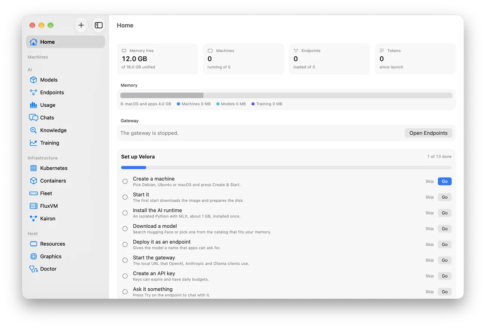
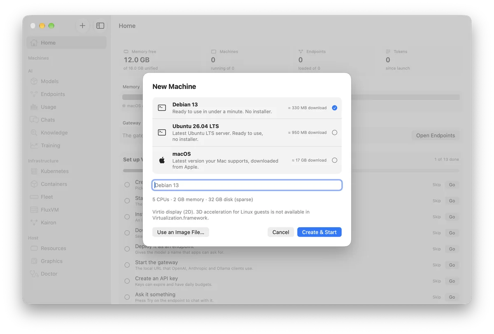
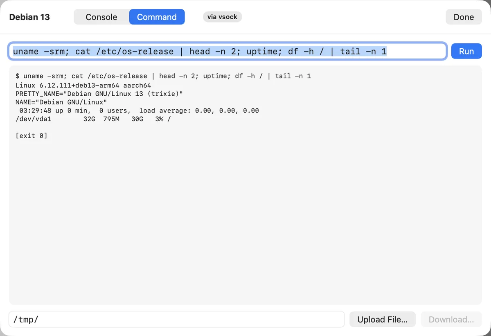
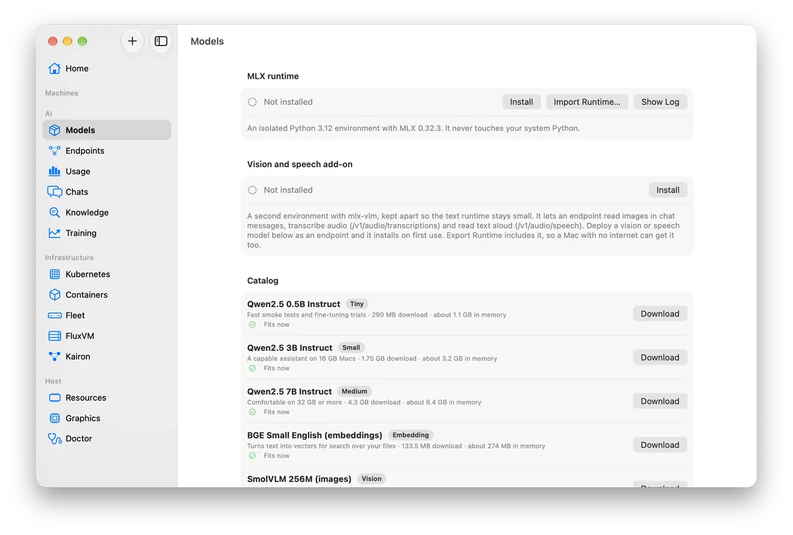
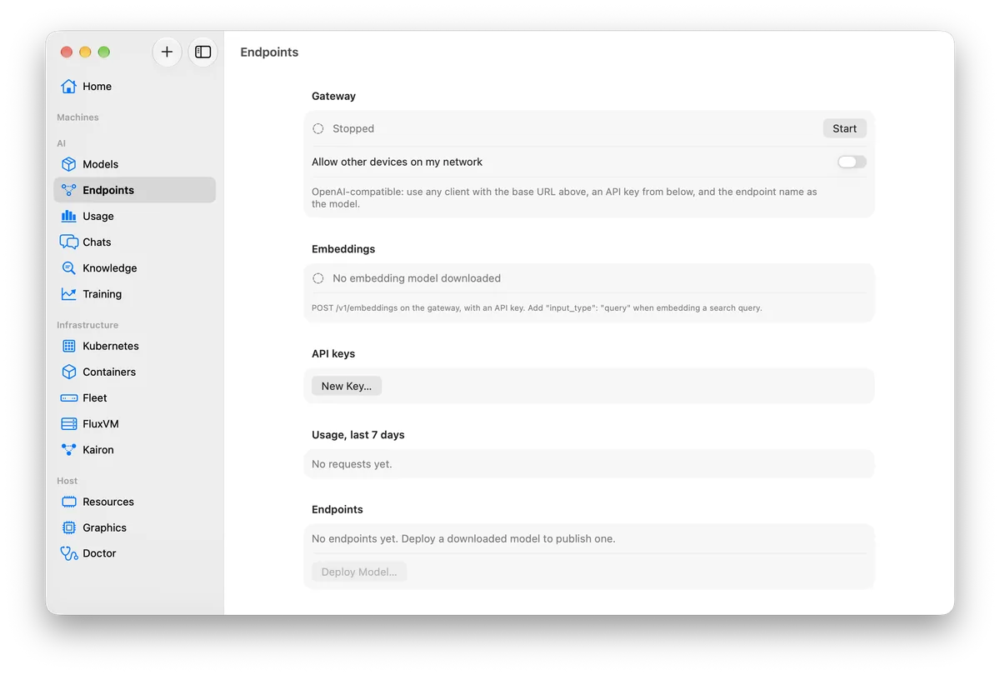
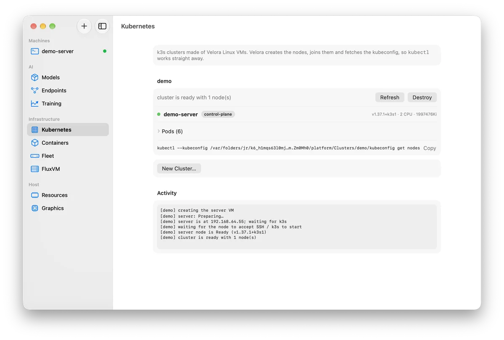
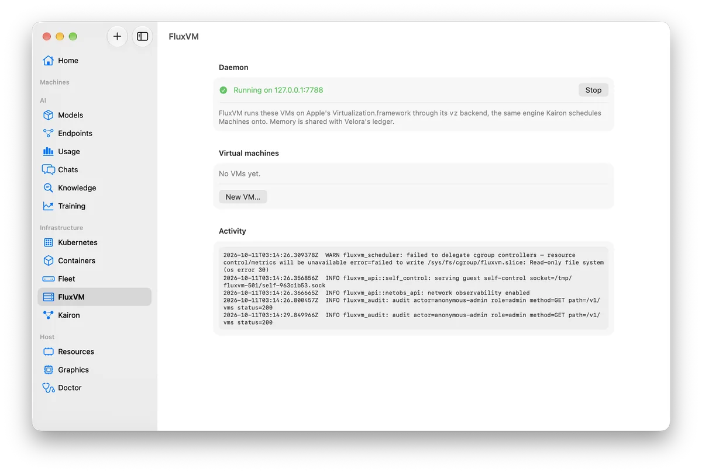
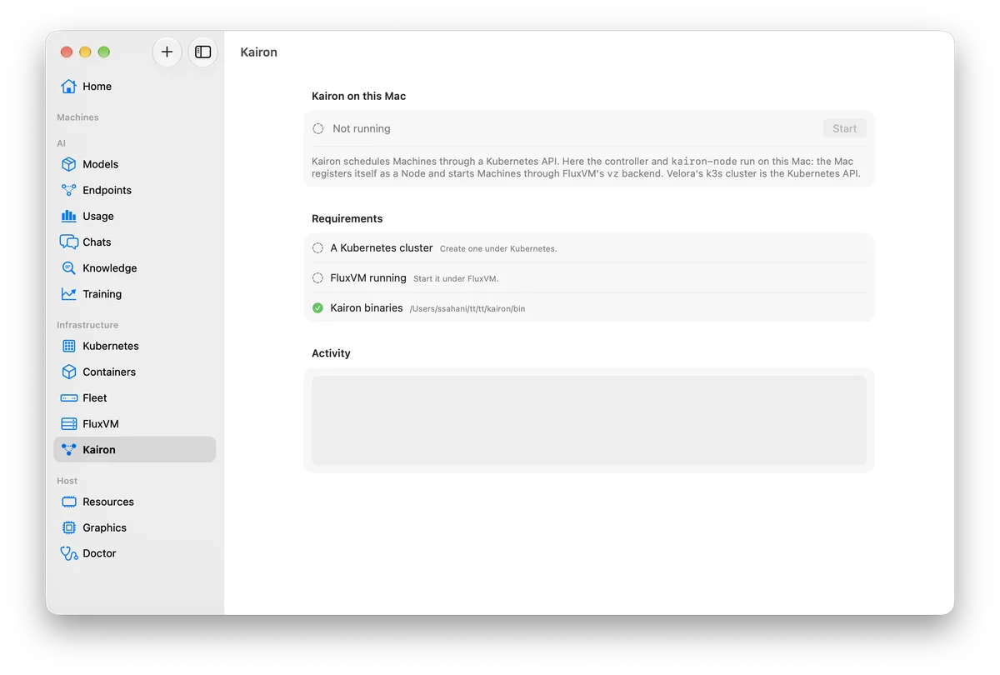
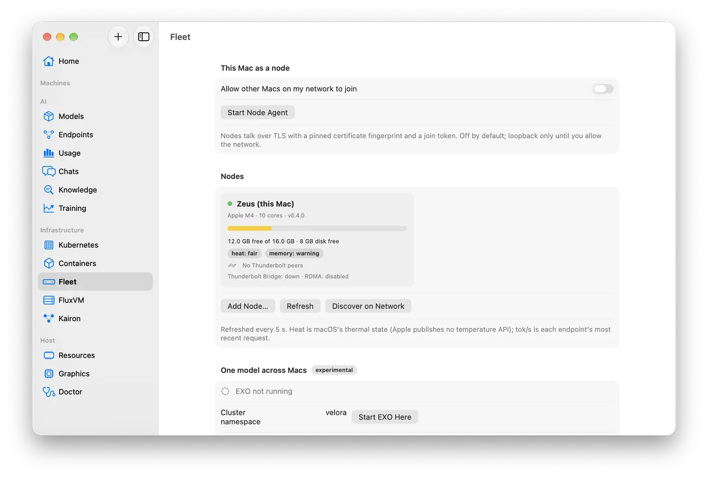

Zyvor · virtual machines and local AI
Velora
VMs, models and clusters on your Mac.
One native app for Apple silicon. Boot Debian, Ubuntu or macOS virtual machines in one click, serve MLX models behind an OpenAI-compatible gateway, bring up Kubernetes, and drive FluxVM and Kairon.
Velora-0.4.4.dmg · See current prices · All downloads
Verified by Apple: Developer ID signed and notarized. This applies to the 0.4.4 DMG.
- Requires macOS 26 or later on Apple silicon (M1 or newer). Intel Macs are not supported.

Run VMs and local AI on one Mac.
A VM in one click
Press ⌘N, choose Debian, Ubuntu or macOS, then Create & Start. Images are cached, resumable and checksum-verified.
Your own private AI endpoint
An OpenAI-compatible endpoint that is versioned, keyed and rate-limited, serving MLX models. Nothing leaves your Mac.
Reach the guest, even offline
A live serial console, a command box with exit codes, and file upload and download, even when the guest's network is down.
Virtual machines, models and clusters. One app.
Velora boots Debian, Ubuntu or macOS on Apple's Virtualization framework and runs a local AI platform on the same Mac.
Features
Machines
A VM in one click.
Press ⌘N, choose Debian, Ubuntu or macOS, then Create & Start. Images are cached, resumable and checksum-verified.
Your first VM
Console & Command
Reach the guest, even offline.
A live serial console, a command box with exit codes, and file upload and download. A small guest agent on virtio-vsock keeps it working with the guest's network down.
How it works
Models
MLX models on your GPU.
Install an isolated MLX runtime once, then download a model from Hugging Face or a catalog that shows what fits your memory.
A private OpenAI endpoint
Endpoints
Your own OpenAI-compatible endpoint.
Versioned, keyed, rate-limited and streaming, with health restarts and one-press rollback. Nothing leaves your Mac.
Endpoint tutorial
Kubernetes
k3s in Velora VMs.
Velora boots Ubuntu 26.04 VMs, installs k3s, fetches the kubeconfig and waits for Ready. Verified for a single node on an M4; multi-node join is not verified.
A k3s cluster
FluxVM
FluxVM, from the app.
Named images, port forwards, shared folders, console, commands, file copy, snapshots and clones, with the daemon supervised by Velora.
FluxVM docs
Kairon
This Mac as a Kubernetes Node.
Kairon registers the Mac as a Node in a Velora k3s cluster. Machines scheduled to it boot through FluxVM.
FluxVM and Kairon on a Mac
Fleet
A card per Mac.
Memory and memory pressure, heat, disk, Thunderbolt links, RDMA and per-endpoint speed for each Mac in the fleet.
A fleet of Macs
And the rest of the toolbox.
Snapshots and clones
Snapshots and restore, clones with a fresh identity, suspend to disk and resume, shared folders, Rosetta, and port forwards on 127.0.0.1.
LoRA fine-tuning
Checkpoint, pause, resume and yield to inference, then serve the adapter as a new version. Fine-tune with LoRA.
One memory ledger
VMs, models, training and FluxVM VMs reserve memory first. Admission and concurrency, not GPU cores.
macOS guests
Velora asks Apple for the newest restore image your Mac supports, downloads it (about 17 GB), installs and boots it. macOS is licensed by Apple, not by Velora: macOS licensing.
Local-first by design.
Local-first
Runs as you. No account, nothing uploaded.
No root, no extensions
Runs as your user on Virtualization.framework with NAT networking.
Honest
It says what is tested and what is not. What is verified.
Specs and requirements.
- Requires
- macOS 26 or later
- Chip
- Apple siliconM1 or newer. Intel Macs are not supported.
- Build
- Signed and notarizedSigned with our Developer ID and notarized by Apple.
- Version
- 0.4.4The app runs without a key. For a 30-day trial key, email sales@zyvor.dev.
- Disk
- About 10 GBFor a Linux guest. A macOS guest needs about 17 GB more.
- Licence
- Business Source License 1.1Production use needs Velora Pro.
Honest limits
Linux guests get a 2D Virtio display: Apple offers no 3D acceleration to Linux guests. Velora was verified on one Apple M4; multi-node k3s join, multi-Mac fleets and Thunderbolt clusters were not. Details: what is verified.
Get started in three steps.
Download
Get
Velora-0.4.4.dmgand its.sha256checksum from the release page, or runbrew install --cask zyvorai/tap/velora.Verify and install
Check the download with
shasum -a 256, open the DMG and drag Velora to Applications.Create a machine
Open Velora, press ⌘N, choose Debian, Ubuntu or macOS, then Create & Start.
Velora 0.4.4 for Mac · SHA-256
93589a2568e6facc70f6b6aac7526472f10c205f64e1931ae1d0629abc4c6312Verify: echo "93589a2568e6facc70f6b6aac7526472f10c205f64e1931ae1d0629abc4c6312 Velora-0.4.4.dmg" | shasum -a 256 -c
Prices and licenses
Current prices, in your currency where available, are on zyvor.dev. You can evaluate for 30 days before you decide.
Buy a licenseAsk for a 30-day trialSee current prices
Licensing in plain words · Several Macs or a larger rollout: contact sales.
Questions, answered.
What does Velora cost?
Current prices are on zyvor.dev/pricing.
Is there a trial?
Yes: a 30-day trial key from sales@zyvor.dev. It is a soft trial: nothing is disabled and no data is lost when it ends.
Which Macs and macOS versions?
Apple silicon (M1 or newer) with macOS 26 or later. Intel Macs are not supported.
Do I get a licence to macOS?
No. macOS guests are licensed by Apple, not by Velora. Velora limits you to two active macOS guests by default and asks you to confirm Apple's terms the first time. See macOS licensing.
What is verified, and what is not?
Debian 13 and Ubuntu 26.04 LTS guests, the vsock agent, single-node k3s, FluxVM and the local AI platform were run on one Apple M4. Multi-Mac fleets, Thunderbolt clusters and multi-node k3s join were not tested. See what is verified.
Can I read the source?
No. The Velora source code is private. This repository holds the website, documentation and downloadable builds.
Can I install with Homebrew?
Yes: brew install --cask zyvorai/tap/velora.